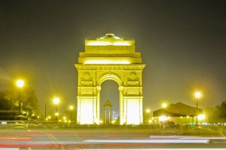

The India Gate (formerly known as the All India War Memorial) is a war memorial located astride the Rajpath, on the eastern edge of the "ceremonial axis" of New Delhi,[1] formerly called Kingsway. It stands as a memorial to 90,000 soldiers of the British Indian Army who died in between 1914 and 1921 in the First World War, in France, Flanders, Mesopotamia, Persia, East Africa, Gallipoli and elsewhere in the Near and the Far East, and the Third Anglo-Afghan War. 13,300 servicemen's names, including some soldiers and officers from the United Kingdom, are inscribed on the gate.[2] Designed by Sir Edwin Lutyens, the gate evokes the architectural style of the triumphal arch such as the Arch of Constantine, in Rome, and is often compared to the Arc de Triomphe in Paris, and the Gateway of India in Mumbai.  India Gate India imgIndia Gate in New Delhi 03-2016.jpg Used for those deceased 1914–1921 Established 10 February 1921 Unveiled 12 February 1931 Location 28°36′46.31″N 77°13′45.5″E India Gate is located in DelhiIndia Gate India Gate (Delhi) Designed by Edwin Lutyens Following the Bangladesh Liberation war in 1972, a structure consisting of a black marble plinth with a reversed rifle, capped by a war helmet and bounded by four eternal flames, was built beneath the archway. This structure, called Amar Jawan Jyoti (Flame of the Immortal Soldier), has since 1971 served as India's tomb of the unknown soldier. India Gate is counted amongst the largest war memorials in India and every Republic Day, the Prime Minister visits the gate to pay their tributes to the Amar Jawan Jyoti, following which the Republic Day parade starts. India Gate is often a location for civil society protests.